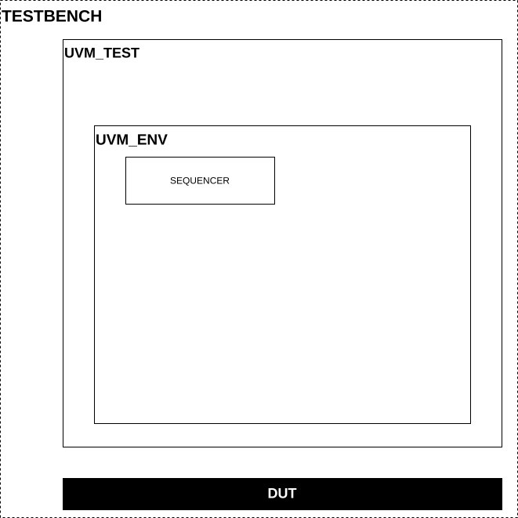
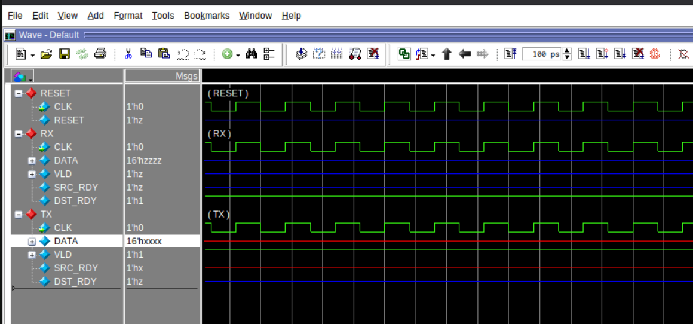
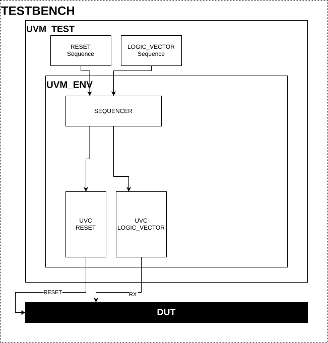
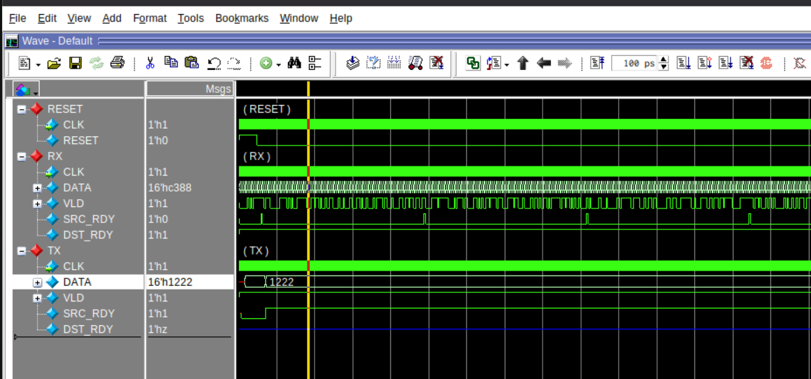
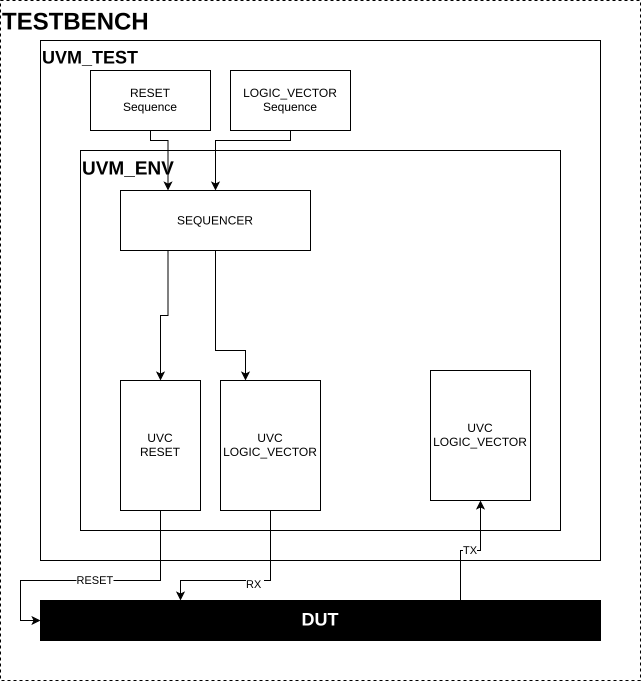
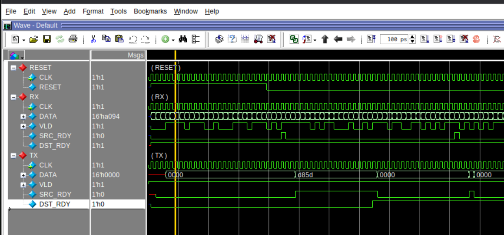
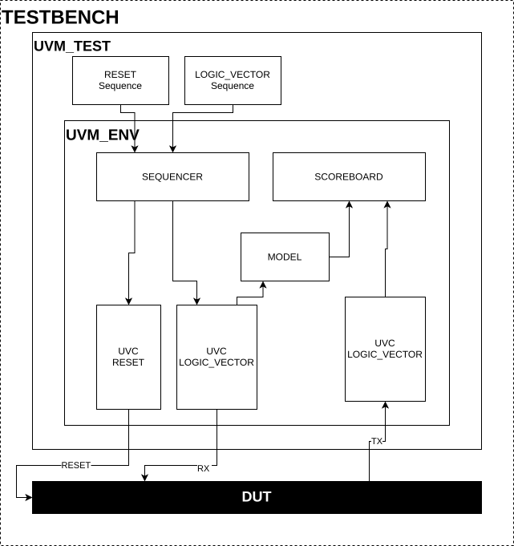

UVM HOWTO - Create the first verification
The aim of this document is to describe how to write a simple UVM verification step by step, with full code and file layout.
New to UVM in this repo? Read the UVM HOWTO — Introduction for Newcomers first for a high-level overview and the meaning of test, environment, UVCs, model, and scoreboard.
For a deeper reference on UVM and the NDK verification environment, see the SystemVerilog and UVM Manual.
Dummy Verification
In this example, we create a simplified verification for component FIFOX Let’s start with dummy verification environment that does nothing. This prepares verification for next steps. Other components to drive DUT (Design Under Test — the verified VHDL component) interfaces will be added later. The dummy verification environment will look like this picture. There are a few components which will be extended later.

The dummy verification environment
Start with the file structure. Next to the DUT, create a uvm directory and inside it tbench. Inside tbench create env and test (some setups use tests). Create the files so the layout matches the list below.
./component.vhd
./uvm/tbench/env/env.sv
./uvm/tbench/env/sequencer.sv
./uvm/tbench/env/pkg.sv
./uvm/tbench/test/base.sv
./uvm/tbench/test/pkg.sv
./uvm/generic.sv
./uvm/Modules.tcl
./uvm/top_level.fdo
./uvm/signals.fdo
Create environment
We start with a minimal environment containing only the virtual sequencer (see UVM HOWTO — Introduction for Newcomers, The big picture). Later we add RX/TX UVCs, model, and scoreboard. Some classes are parametrised (e.g. env), similar to C++ templates.
class env #(
int unsigned DATA_WIDTH
) extends uvm_env;
`uvm_component_param_utils(uvm_fifox::env #(DATA_WIDTH));
// Virtual sequencer
sequencer #(DATA_WIDTH) m_sequencer;
// Constructor
function new(string name, uvm_component parent = null);
super.new(name, parent);
endfunction
// check if in environment is some pending data
function int unsigned used();
int unsigned ret = 0;
return ret;
endfunction
// Create base components of environment.
function void build_phase(uvm_phase phase);
//Call parents function build_phase
super.build_phase(phase);
endfunction
// Connect agent's ports with ports from scoreboard.
function void connect_phase(uvm_phase phase);
endfunction
endclass
The virtual sequencer collects other sequencers to simplify cooperation between sequences. When adding UVCs into the environment we should add the sequencer from the UVC to the virtual sequencer associated with the environment. Now the virtual sequencer is just empty class. Later we add RX sequencer.
class sequencer #(
int unsigned DATA_WIDTH
) extends uvm_sequencer;
`uvm_component_param_utils(uvm_fifox::sequencer #(DATA_WIDTH))
function new(string name, uvm_component parent);
super.new(name, parent);
endfunction
endclass
The last thing in the environment is to create a package file. Package simplifies organization of files and classes into namespace.
Create test
Create a test class that builds the environment and, in run_phase, raises an objection, starts sequences, waits for work to finish, then drops the objection so simulation can end (see UVM HOWTO — Introduction for Newcomers, The big picture). Function used indicates whether the scoreboard is still waiting for DUT data.
class base#(
int unsigned DATA_WIDTH
) extends uvm_test;
`m_uvm_object_registry_internal(test::base#(DATA_WIDTH), test::base)
`m_uvm_get_type_name_func(test::base)
// test have to create top level environment
uvm_fifox::env #(DATA_WIDTH) m_env;
function new(string name, uvm_component parent = null);
super.new(name, parent);
endfunction
function void build_phase(uvm_phase phase);
m_env = uvm_fifox::env #(DATA_WIDTH)::type_id::create("m_env", this);
endfunction
// ------------------------------------------------------------------------
// run sequences on their sequencers
virtual task run_phase(uvm_phase phase);
time time_end;
// Rise objection
phase.raise_objection(this);
#(100us);
// Wait for transactions to leave DUT
time_end = $time + 1000us;
while ($time < time_end && m_env.used() == 1) begin
#(500ns);
end
// drop objection
phase.drop_objection(this);
endtask
function void report_phase(uvm_phase phase);
`uvm_info(this.get_full_name(), {"\n\tTEST : ", this.get_type_name(), " END\n"}, UVM_NONE);
endfunction
endclass
Create the test package. This package creates the test namespace.
`ifndef FIFOX_TEST_SV
`define FIFOX_TEST_SV
package test;
`include "uvm_macros.svh"
import uvm_pkg::*;
`include "base.sv"
endpackage
`endif
Create testbench
The testbench instantiates the DUT and interfaces. In the initial block you register each interface in the config database (so UVCs can find it), then call run_test() and $stop(2). See UVM HOWTO — Introduction for Newcomers (Configuration database) for the name-matching rule. This example uses logic_vector_mvb to adapt the FIFO interface to MVB. In our UVC is not interface for common FIFO interface. We could create one or we can used one of the existing with slight adjustents/conversions. Opting for the second option, we convert signals between the FIFO and MVB interface.
import uvm_pkg::*;
`include "uvm_macros.svh"
import uvm_generic::*;
module testbench;
// Register test with parameters in UVM factory.
typedef test::base#(uvm_generic::DATA_WIDTH) base;
// Create clock
logic CLK = 0;
always #(CLK_PERIOD/2) CLK = ~CLK;
reset_if reset (CLK);
mvb_if #(1, DATA_WIDTH) mvb_rx (CLK);
mvb_if #(1, DATA_WIDTH) mvb_tx (CLK);
initial begin
uvm_root m_root;
// REGISTER INTERFACE INTO DATABASE
uvm_config_db #(virtual reset_if)::set(null, "", "vif_reset", reset);
uvm_config_db #(virtual mvb_if #(1, DATA_WIDTH)) ::set(null, "", "vif_mvb_rx", mvb_rx );
uvm_config_db #(virtual mvb_if #(1, DATA_WIDTH)) ::set(null, "", "vif_mvb_tx", mvb_tx );
// stop on end of simulation and dont print message ILLEGALNAME
m_root = uvm_root::get();
m_root.finish_on_completion = 0;
m_root.set_report_id_action_hier("ILLEGALNAME", UVM_NO_ACTION);
// dont record transactions
uvm_config_db #(int) ::set(null, "", "recording_detail", 0);
uvm_config_db #(uvm_bitstream_t)::set(null, "", "recording_detail", 0);
// RUN TESTS
run_test();
// STOP ON END OF SIMULATION
$stop(2);
end
// Instantiate DUT or other VHDL architectures
logic full;
logic empty;
FIFOX #(
.DATA_WIDTH (uvm_generic::DATA_WIDTH ),
.ITEMS (uvm_generic::ITEMS ),
.RAM_TYPE (uvm_generic::RAM_TYPE ),
.DEVICE (uvm_generic::DEVICE ),
.ALMOST_FULL_OFFSET (uvm_generic::ALMOST_FULL_OFFSET ),
.ALMOST_EMPTY_OFFSET (uvm_generic::ALMOST_EMPTY_OFFSET),
.FAKE_FIFO (uvm_generic::FAKE_FIFO )
) VHDL_DUT_U (
.CLK (CLK),
.RESET (RST),
.DI (mvb_rx.DATA),
// Write only when valid data is on the bus.
.WR (mvb_rx.SRC_RDY & mvb_rx.VLD[0]),
.FULL (full),
.AFULL (),
.STATUS (),
.DO (mvb_tx.DATA ),
.RD (mvb_tx.DST_RDY),
.EMPTY (empty ),
.AEMPTY ()
);
assign mvb_rx.DST_RDY = ~full;
assign mvb_tx.SRC_RDY = ~empty;
// There is only one item which is always
// valid when SRC_RDY is set. Valid is indicated by
// signal SRC_RDY.
assign mvb_tx.VLD = '1;
endmodule
Clock generation (commonly in the testbench):
// Create clock
logic CLK = 0;
always #(CLK_PERIOD/2) CLK = ~CLK;
Interface registration (names must match UVC config; see intro):
uvm_config_db #(virtual reset_if)::set(null, "", "vif_reset", reset);
uvm_config_db #(virtual mvb_if #(1, DATA_WIDTH)) ::set(null, "", "vif_mvb_rx", mvb_rx );
uvm_config_db #(virtual mvb_if #(1, DATA_WIDTH)) ::set(null, "", "vif_mvb_tx", mvb_tx );
Run the test and stop simulation:
// RUN TESTS
run_test();
// STOP ON END OF SIMULATION
$stop(2);
Create parameters package
Put DUT generic parameters in a package so the verification can mirror them and run all relevant combinations. The snippet below mirrors the FIFO generics and adds CLK_PERIOD.
package uvm_generic;
parameter int unsigned DATA_WIDTH = 64;
parameter int unsigned ITEMS = 16;
parameter string RAM_TYPE = "AUTO";
parameter string DEVICE = "ULTRASCALE";
parameter int unsigned ALMOST_FULL_OFFSET = 0;
parameter int unsigned ALMOST_EMPTY_OFFSET = 0;
parameter int unsigned FAKE_FIFO = 0;
parameter time CLK_PERIOD = 4ns;
endpackage
Create required scripts
Scripts automatization of package compilation, setup verification and run the verification. There are four important scripts.
Modules.tcl - This file is used for adding verification dependencies
top_level.fdo - Top-level file to launch the simulation: vsim -do top_level.fdo (add -c for command line without GUI)
signals.fdo - This file contains signals that are shown in the waveform.
ver_settings.py - This file is for the multiver script. Run verification with different parameters. Not important at this time.
Script Modules.tcl takes care of verification files and their dependencies. You can see there, three types of variables
PACKAGES - Simple one file dependecies (Packages)
COMPONENTS - local files dependencies (NDK’s UVC). Commonly in <NDK-root-dir>/comp/uvm
MOD - Local files (tbench files)
lappend COMPONENTS [ list "SV_LV_MVB_BASE" "$OFM_PATH/comp/uvm/logic_vector_mvb" "FULL"]
lappend COMPONENTS [ list "SV_RESET_BASE" "$OFM_PATH/comp/uvm/reset" "FULL"]
lappend MOD "$ENTITY_BASE/tbench/env/pkg.sv"
lappend MOD "$ENTITY_BASE/tbench/test/pkg.sv"
lappend MOD "$ENTITY_BASE/tbench/generic.sv"
lappend MOD "$ENTITY_BASE/tbench/testbench.sv"
top_level.fdo starts the simulation. Set SIM_FLAGS(UVM_TEST) to your test name (e.g. "test::base");
SIM_FLAGS(DEBUG) enables waveforms, SIM_FLAGS(UVM_VERBOSITY) controls log detail. See the script comments for seed and other options.
# PATH TO OFM
set FIRMWARE_BASE ../../../../../ndk-fpga
# TOP LEVEL SIMULATION FILE
set TB_FILE "./tbench/testbench.sv"
# FILE WITH SIGNALS (NOT REQUIRED)
# set SIG_FILE "./signals.fdo"
# PATH TO DIRECTORY WITH file Modules.tcl for Design under test (component)
lappend COMPONENTS [list "DUT" ".." "FULL" ]
# PATH TO DIRECTORY WITH file Modules.tcl for verification
lappend COMPONENTS [list "DUT_UVM" "." "FULL" ]
# Enable Code Coverage
# set SIM_FLAGS(CODE_COVERAGE) true
# Enable UVM verification
set SIM_FLAGS(UVM_ENABLE) true
# Set test which is going to be run
set SIM_FLAGS(UVM_TEST) "test::base"
#set SIM_FLAGS(UVM_TEST) "test::base_extended"
# set verbosity level if you want messages UVM_NONE, UVM_LOW, UVM_MEDIUM, UVM_HIGH, UVM_FULL, UVM_DEBUG
set SIM_FLAGS(UVM_VERBOSITY) UVM_NONE
# set debug if needed for debugging
# set to false when you put it into git
set SIM_FLAGS(DEBUG) true
# set rand seed if needed for debugging
# set SIM_FLAGS(RAND_SEED) 143493821
# Global include file for compilation
source "$FIRMWARE_BASE/build/Modelsim.inc.fdo"
# Suppress warnings from numeric and arithmetic libraries
puts "Numeric Std Warnings - Disabled"
set NumericStdNoWarnings 1
puts "Std Arith Warnings - Disabled"
set StdArithNoWarnings 1
# RUN SIMULATION
nb_sim_run
## restart simulation if needed
## in the vsim command interface, you can use the following command to restart
## the verification without building it again (optional, to save some time).
# nb_sim_restart
signals.fdo adds signals to the waveform (paths start with /testbench/).
# add signals
add wave -noupdate -group "RESET" "/testbench/reset/*"
add wave -noupdate -group "RX" "/testbench/mvb_rx/*"
add wave -noupdate -group "TX" "/testbench/mvb_tx/*"
Run First test
Run the verification: vsim -do top_level.fdo (or vsim -do top_level.fdo -c for command line without GUI).
The same command is used for all following steps; only the results change.
You can now run the verification and observe the signals in a waveform. As you can see in the picture, there isn’t any data sent to the DUT. This first implementation does nothing. In the next chapters we will add UVCs to start generating and observing signals.

Waveform displaying run of the dummy verification environment
UVM PHASES
UVM components run in phases (e.g. build_phase, connect_phase, run_phase); you see them in env.sv and test.sv. For an overview of what each phase does, see UVM HOWTO — Introduction for Newcomers (UVM concepts — Phases). Not every component implements every phase; for example, the NDK agents commonly don’t implement check_phase.
Drive RX Input and Reset
Add stimulus by integrating existing NDK UVCs: uvm_reset::agent and uvm_logic_vector_mvb::env_rx. We map the FIFO’s simple interface (data, WR, full / data, RD, empty) to MVB and use reset for the reset signal. In build_phase you create config objects and the UVC instances; in connect_phase you connect reset sync and the virtual sequencer. RX UVC drives the DUT input; for custom sequences see UVM HOWTO - Upgrade verification.

Add RX input and reset to the dummy verification environment
Extends verification environment by adding UVCs uvm_logic_vector_mvb::env_rx and uvm_reset::agent.
class env #(
int unsigned DATA_WIDTH
) extends uvm_env;
`uvm_component_param_utils(uvm_fifox::env #(DATA_WIDTH));
// Virtual sequencer
sequencer #(DATA_WIDTH) m_sequencer;
// RESET interface
protected uvm_reset::agent m_reset;
// RX environments
protected uvm_logic_vector_mvb::env_rx #(1, DATA_WIDTH) m_rx;
// Constructor
function new(string name, uvm_component parent = null);
super.new(name, parent);
endfunction
function int unsigned used();
int unsigned ret = 0;
return ret;
endfunction
// Create base components of environment.
function void build_phase(uvm_phase phase);
uvm_reset::config_item m_cfg_reset;
uvm_logic_vector_mvb::config_item m_cfg_rx;
//Call parents function build_phase
super.build_phase(phase);
//Create reset environment
m_cfg_reset = new;
m_cfg_reset.active = UVM_ACTIVE; // Activly driven environment
// interface register name have to be same in testbench uvm_config_db#(...)::set();
m_cfg_reset.interface_name = "vif_reset";
uvm_config_db #(uvm_reset::config_item)::set(this, "m_reset", "m_config", m_cfg_reset);
// Creation of the reset
m_reset = uvm_reset::agent::type_id::create("m_reset", this);
// Configuration of the m_rx
m_cfg_rx = new;
m_cfg_rx.active = UVM_ACTIVE;
// interface register name has to be same in testbench uvm_config_db#(...)::set();
m_cfg_rx.interface_name = "vif_mvb_rx";
uvm_config_db #(uvm_logic_vector_mvb::config_item)::set(this, "m_rx", "m_config", m_cfg_rx);
// Creation of the m_rx
m_rx = uvm_logic_vector_mvb::env_rx #(1, DATA_WIDTH)::type_id::create("m_rx", this);
endfunction
// Connect agent's ports with ports from scoreboard.
function void connect_phase(uvm_phase phase);
// Connection of the reset
m_reset.sync_connect(m_rx.reset_sync);
// Connect sequencer
m_sequencer.m_reset = m_reset.m_sequencer;
m_sequencer.m_rx = m_rx.m_sequencer;
endfunction
endclass
Add sequencers reset and uvm_logic_vector into the virtual sequencer. Virtual sequencer associates RX sequencer to simplify cooperation between sequences. Sequences generate input transactions to the dut. Here we generated high-level transactions.
class sequencer #(
int unsigned DATA_WIDTH
) extends uvm_sequencer;
`uvm_component_param_utils(uvm_fifox::sequencer #(DATA_WIDTH))
// reset sequencer
uvm_reset::sequencer m_reset;
// rx sequencer
uvm_logic_vector::sequencer #(DATA_WIDTH) m_rx;
function new(string name, uvm_component parent);
super.new(name, parent);
endfunction
endclass
Run sequence uvm_reset::sequence_start and uvm_logic_vector::sequence_simple in the test. Sequence uvm_reset::sequence_start resets the DUT at the start of verification, then after a while sets reset low until end of simulation. Sequence uvm_logic_vector::sequence_simple generates data to the FIFO input. The generated data is sent to the DUT input. If we want to run two sequences at the same time we have to create two parallel tasks. The fork command creates new threads and executes tasks. fork can be terminated by three commands:
join — to continue, all tasks have to terminate
join_any — to continue, one task has to terminate
join_none — to continue, no task has to terminate
In our case we want the code to continue when the sequence that generates input data has stopped. Using join would not work because the reset sequence never stops.
class base#(
int unsigned DATA_WIDTH
) extends uvm_test;
`m_uvm_object_registry_internal(test::base#(DATA_WIDTH), test::base)
`m_uvm_get_type_name_func(test::base)
// test has to create top-level environment
uvm_fifox::env #(DATA_WIDTH) m_env;
function new(string name, uvm_component parent = null);
super.new(name, parent);
endfunction
function void build_phase(uvm_phase phase);
m_env = uvm_fifox::env #(DATA_WIDTH)::type_id::create("m_env", this);
endfunction
//------------------------------------------------------------------------
// run sequences on their sequencers
virtual task run_phase(uvm_phase phase);
time time_end;
phase.raise_objection(this);
fork
// Reset DUT
begin
uvm_reset::sequence_start seq_rst;
seq_rst = uvm_reset::sequence_start::type_id::create("seq_rst", this);
assert(seq_rst.randomize()) else `uvm_fatal(this.get_full_name(), "\n\tCannot randomize reset sequence");
seq_rst.start(m_env.m_sequencer.m_reset);
end
// Start RX sequence. Generating input
begin
uvm_logic_vector::sequence_simple #(DATA_WIDTH) seq_rx;
seq_rx = uvm_logic_vector::sequence_simple #(DATA_WIDTH)::type_id::create("seq_rx", this);
assert(seq_rx.randomize()) else `uvm_fatal(this.get_full_name(), "\n\tCannot randomize RX sequence");
seq_rx.start(m_env.m_sequencer.m_rx);
end
join_any
#(100us);
// Wait for all transactions to leave the DUT
time_end = $time + 1000us;
while ($time < time_end && m_env.used() == 1) begin
#(500ns);
end
phase.drop_objection(this);
endtask
function void report_phase(uvm_phase phase);
`uvm_info(this.get_full_name(), {"\n\tTEST : ", this.get_type_name(), " END\n"}, UVM_NONE);
endfunction
endclass
Run test
Run the verification (same command as in Run First test: vsim -do top_level.fdo). You should see input on the RX interface in the waveform.

Waveform displaying change when RX and reset are driven
Note that for the first few clock cycles the DUT is in reset and the verification sends transactions to the RX interface. Because we did not instantiate the TX UVC yet, there is no communication through the TX interface. As you can see the signal DST_RDY on the TX side is in high impedance.
If there is unmatched data from the model at the end of verification, the comparators assume the DUT has gotten stuck.
NDK UVCs
NDK UVCs (in comp/uvm/) simplify verification by providing ready-made conversions between high-level transactions and
NDK interfaces. For a quick list of the most important UVCs (reset, logic_vector_mvb, mi,
common, etc.) see the UVM HOWTO — Introduction for Newcomers (Quick reference). For the full list of low-level and
high-level agents, converting UVCs, and supporting UVCs, see the SystemVerilog and UVM Manual. Interface names
in the testbench uvm_config_db::set must match the UVC configuration (see intro, Configuration database).
Drive TX
Add uvm_logic_vector_mvb::env_tx to the environment. It drives DST_RDY (FIFO read) so the FIFO can be read, and monitors DUT output for the scoreboard in the next step.

Add TX driver into the verification environment
class env #(
int unsigned DATA_WIDTH
) extends uvm_env;
`uvm_component_param_utils(uvm_fifox::env #(DATA_WIDTH));
// Virtual sequencer
sequencer #(DATA_WIDTH) m_sequencer;
// RESET interface
protected uvm_reset::agent m_reset;
// RX environments
protected uvm_logic_vector_mvb::env_rx #(1, DATA_WIDTH) m_rx;
// TX environments
protected uvm_logic_vector_mvb::env_tx #(1, DATA_WIDTH) m_tx;
// Constructor
function new(string name, uvm_component parent = null);
super.new(name, parent);
endfunction
function int unsigned used();
int unsigned ret = 0;
return ret;
endfunction
// Create base components of environment.
function void build_phase(uvm_phase phase);
uvm_reset::config_item m_cfg_reset;
uvm_logic_vector_mvb::config_item m_cfg_rx;
uvm_logic_vector_mvb::config_item m_cfg_tx;
//Call parents function build_phase
super.build_phase(phase);
//Create reset environment
m_cfg_reset = new;
m_cfg_reset.active = UVM_ACTIVE; // Activly driven environment
// interface register name have to be same in testbench uvm_config_db#(...)::set();
m_cfg_reset.interface_name = "vif_reset";
uvm_config_db #(uvm_reset::config_item)::set(this, "m_reset", "m_config", m_cfg_reset);
// Creation of the reset
m_reset = uvm_reset::agent::type_id::create("m_reset", this);
// Configuration of the m_rx
m_cfg_rx = new;
m_cfg_rx.active = UVM_ACTIVE;
// interface register name have to be same in testbench uvm_config_db#(...)::set();
m_cfg_rx.interface_name = "vif_mvb_rx";
uvm_config_db #(uvm_logic_vector_mvb::config_item)::set(this, "m_rx", "m_config", m_cfg_rx);
// Creation of the m_rx
m_rx = uvm_logic_vector_mvb::env_rx #(1, DATA_WIDTH)::type_id::create("m_rx", this);
// Configuration of the m_tx
m_cfg_tx = new;
m_cfg_tx.active = UVM_ACTIVE;
// interface register name have to be same in testbench uvm_config_db#(...)::set();
m_cfg_tx.interface_name = "vif_mvb_tx";
uvm_config_db #(uvm_logic_vector_mvb::config_item)::set(this, "m_tx", "m_config", m_cfg_tx);
// Creation of the m_tx
m_tx = uvm_logic_vector_mvb::env_tx #(1, DATA_WIDTH)::type_id::create("m_tx", this);
endfunction
// Connect agent's ports with ports from scoreboard.
function void connect_phase(uvm_phase phase);
// Connection of the reset
m_reset.sync_connect(m_rx.reset_sync);
m_reset.sync_connect(m_tx.reset_sync);
// Connect sequencer
m_sequencer.m_reset = m_reset.m_sequencer;
m_sequencer.m_rx = m_rx.m_sequencer;
endfunction
endclass
Run test
Run the verification (same command as in Run First test: vsim -do top_level.fdo). You should see DST_RDY driven on the TX side and data accepted by the verification environment; check the waveform to confirm the TX interface is driven.

Waveform displaying change when the TX interface are driven
Model and Scoreboard

Add scoreboard and model to the verification
The model produces expected transactions from the same inputs as the DUT; the scoreboard compares them to DUT outputs (see UVM HOWTO — Introduction for Newcomers, Model and scoreboard). For our FIFO, order is preserved so we use uvm_common::comparer_ordered. The code below shows the scoreboard (with report_phase printing VERIFICATION SUCCESS or VERIFICATION FAILED) and the model (a simple pass-through for the FIFO). For different model vs DUT transaction types, override compare in the comparer. Automatic testing looks for VERIFICATION SUCCESS in the transcript; see uvm_howto_others.
class scoreboard #(
int unsigned DATA_WIDTH
) extends uvm_scoreboard;
`uvm_component_utils(uvm_fifox::scoreboard #(DATA_WIDTH))
// Transaction comparator
uvm_common::comparer_ordered #(uvm_logic_vector::sequence_item #(DATA_WIDTH)) cmp;
// Contructor of scoreboard.
function new(string name, uvm_component parent = null);
super.new(name, parent);
endfunction
// return 1 when there si no error otherwise 0
function int unsigned success();
int unsigned ret = 1;
ret &= cmp.success();
return ret;
endfunction
// return 1 when waiting for some transactions from DUT
function int unsigned used();
int unsigned ret = 0;
ret |= cmp.used();
return ret;
endfunction
function void build_phase(uvm_phase phase);
// Create scoreboard
cmp = uvm_common::comparer_ordered #(uvm_logic_vector::sequence_item #(DATA_WIDTH))::type_id::create("cmp", this);
endfunction
function void report_phase(uvm_phase phase);
string msg = "\n";
if (this.success() && this.used() == 0) begin
`uvm_info(get_type_name(), {msg, "\n\n\t---------------------------------------\n\t---- VERIFICATION SUCCESS ----\n\t---------------------------------------"}, UVM_NONE)
end else begin
`uvm_info(get_type_name(), {msg, "\n\n\t---------------------------------------\n\t---- VERIFICATION FAILED ----\n\t---------------------------------------"}, UVM_NONE)
end
endfunction
endclass
The model creates a predicted output transaction from an input transaction. An input transaction is commonly generated in a sequence. Then it is sent to the DUT and the Model. The DUT is a FIFO, so it does not change the input transaction and sends it directly to the output. So the model does the same: it only forwards data to the output and does not make any changes.
class model #(
int unsigned DATA_WIDTH
) extends uvm_scoreboard;
`uvm_component_utils(uvm_fifox::model #(DATA_WIDTH))
// port for input data
uvm_tlm_analysis_fifo#(uvm_logic_vector::sequence_item#(DATA_WIDTH)) m_rx;
// port for output data
uvm_analysis_port #(uvm_logic_vector::sequence_item#(DATA_WIDTH)) m_tx;
function new(string name, uvm_component parent = null);
super.new(name, parent);
m_rx = new("m_rx", this);
m_tx = new("m_tx", this);
endfunction
function int unsigned used();
int unsigned ret = 0;
ret |= (m_rx.used() != 0);
return ret;
endfunction
task run_phase(uvm_phase phase);
uvm_logic_vector::sequence_item#(DATA_WIDTH) data;
forever begin
//get data from input queue
m_rx.get(data);
// print data when SIM_FLAGS(UVM_VERBOSITY) UVM_HIGH
`uvm_info(this.get_full_name(), $sformatf("\n\tModel get transaction%s", data.convert2string()), UVM_HIGH);
// Process data (FIFO don't change data)
// send data to output port
m_tx.write(data);
end
endtask
endclass
Add the model and the scoreboard into the environment
class env #(
int unsigned DATA_WIDTH
) extends uvm_env;
`uvm_component_param_utils(uvm_fifox::env #(DATA_WIDTH));
// Virtual sequencer
sequencer #(DATA_WIDTH) m_sequencer;
// RESET interface
protected uvm_reset::agent m_reset;
// RX environments
protected uvm_logic_vector_mvb::env_rx #(1, DATA_WIDTH) m_rx;
// TX environments
protected uvm_logic_vector_mvb::env_tx #(1, DATA_WIDTH) m_tx;
// Scoreboard
protected scoreboard #(DATA_WIDTH) m_sc;
// Model instance
protected uvm_fifox::model #(DATA_WIDTH) m_model;
// Constructor
function new(string name, uvm_component parent = null);
super.new(name, parent);
endfunction
function int unsigned used();
int unsigned ret = 0;
ret |= (m_model.used() != 0);
ret |= (m_sc.used() != 0);
return ret;
endfunction
// Create base components of environment.
function void build_phase(uvm_phase phase);
uvm_reset::config_item m_cfg_reset;
uvm_logic_vector_mvb::config_item m_cfg_rx;
uvm_logic_vector_mvb::config_item m_cfg_tx;
//Call parents function build_phase
super.build_phase(phase);
//Create reset environment
m_cfg_reset = new;
m_cfg_reset.active = UVM_ACTIVE; // Activly driven environment
// interface register name have to be same in testbench uvm_config_db#(...)::set();
m_cfg_reset.interface_name = "vif_reset";
uvm_config_db #(uvm_reset::config_item)::set(this, "m_reset", "m_config", m_cfg_reset);
// Creation of the reset
m_reset = uvm_reset::agent::type_id::create("m_reset", this);
// Configuration of the m_rx
m_cfg_rx = new;
m_cfg_rx.active = UVM_ACTIVE;
// interface register name has to be same in testbench uvm_config_db#(...)::set();
m_cfg_rx.interface_name = "vif_mvb_rx";
uvm_config_db #(uvm_logic_vector_mvb::config_item)::set(this, "m_rx", "m_config", m_cfg_rx);
// Creation of the m_rx
m_rx = uvm_logic_vector_mvb::env_rx #(1, DATA_WIDTH)::type_id::create("m_rx", this);
// Configuration of the m_tx
m_cfg_tx = new;
m_cfg_tx.active = UVM_ACTIVE;
// interface register name has to be same in testbench uvm_config_db#(...)::set();
m_cfg_tx.interface_name = "vif_mvb_tx";
uvm_config_db #(uvm_logic_vector_mvb::config_item)::set(this, "m_tx", "m_config", m_cfg_tx);
// Creation of the m_tx
m_tx = uvm_logic_vector_mvb::env_tx #(1, DATA_WIDTH)::type_id::create("m_tx", this);
m_sc = scoreboard #(DATA_WIDTH)::type_id::create("m_sc", this);
m_model = uvm_fifox::model #(DATA_WIDTH)::type_id::create("m_model", this);
endfunction
// Connect agent's ports with ports from scoreboard.
function void connect_phase(uvm_phase phase);
// Connection of the reset
m_reset.sync_connect(m_rx.reset_sync);
m_reset.sync_connect(m_tx.reset_sync);
// Connection to scoreboard
m_rx.analysis_port.connect(m_model.m_rx.analysis_export);
// Connect to Scoreboard
m_model.m_tx.connect(m_sc.cmp.analysis_imp_model);
m_tx.analysis_port.connect(m_sc.cmp.analysis_imp_dut);
// Connect sequencer
m_sequencer.m_reset = m_reset.m_sequencer;
m_sequencer.m_rx = m_rx.m_sequencer;
endfunction
endclass
Add scoreboard and model to verification environment package.
`ifndef FIFOX_ENV_SV
`define FIFOX_ENV_SV
package uvm_fifox;
`include "uvm_macros.svh"
import uvm_pkg::*;
`include "sequencer.sv"
`include "model.sv"
`include "scoreboard.sv"
`include "env.sv"
endpackage
`endif
Run test
Run the verification (same command as in Run First test: vsim -do top_level.fdo). If all transactions match, you will see VERIFICATION SUCCESS in the transcript.
On failure you get uvm_error messages (e.g. Transaction doesn’t match when DUT output differs from the model).
If you raise verbosity mode to set SIM_FLAGS(UVM_VERBOSITY) UVM_LOW in Modules.tcl you can see summary info in transcript every 50 millisecond of simulation time. Also you can set set SIM_FLAGS(UVM_VERBOSITY) UVM_FULL to see every transaction received by comparators from DUT and MODEL.
Congratulations. You have written your first UVM verification!
Next steps
For a roadmap of what to do next (more tests, factory, register model, multiver), see the “Where to go next” section in the UVM HOWTO — Introduction for Newcomers. To extend this environment with a register model, custom sequences, or the UVM factory, continue with the UVM HOWTO - Upgrade verification. To run many parameter combinations automatically, see the uvm_howto_others.